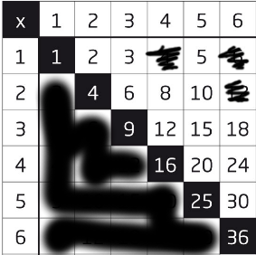
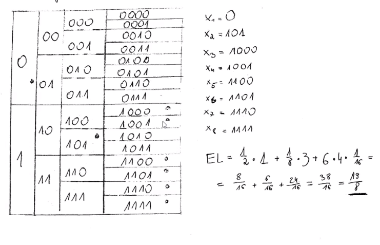
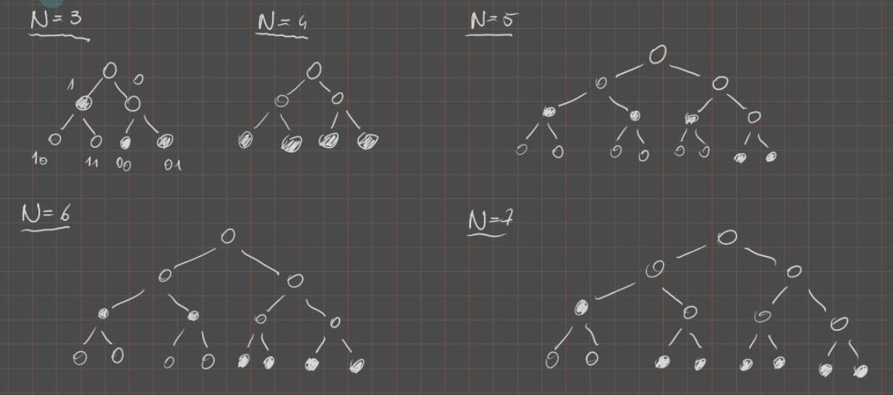
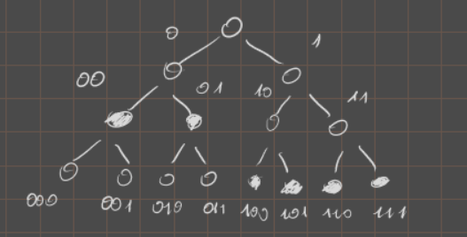

Zadanie 1.
Oblicz entropię wyniku w następujących eksperymentach
1.a)
Rzucamy dwiema kostkami sześciennymi i sumujemy liczbę oczek.
∣ Ω ∣ = 11 |\Omega| = 11 ∣ Ω ∣ = 1 1
Ω = { 2 , 3 , … , 12 } \Omega = \{ 2, 3, \dots, 12 \} Ω = { 2 , 3 , … , 1 2 }
P ( ω ) = { 2 , 3 , 11 , 12 1 36 4 , 5 , 9 , 10 2 36 6 , 7 , 8 3 36
P(\omega) =
\begin{cases}
2, 3, 11, 12 & \frac{1}{36}\\
4, 5, 9, 10 & \frac{2}{36}\\
6, 7, 8 & \frac{3}{36}\\
\end{cases}
P ( ω ) = ⎩ ⎪ ⎪ ⎨ ⎪ ⎪ ⎧ 2 , 3 , 1 1 , 1 2 4 , 5 , 9 , 1 0 6 , 7 , 8 3 6 1 3 6 2 3 6 3
H ( Ω ) = E I \mathrm{H}(\Omega) = \mathrm{E}I H ( Ω ) = E I
I ( ω ) = − log 2 ( P ( ω ) ) I(\omega) = -\log_2\left(P(\omega)\right) I ( ω ) = − log 2 ( P ( ω ) )
E I = ∑ ω ∈ Ω ( P ( ω ) ⋅ log 2 ( 1 P ( ω ) ) ) = 4 ⋅ 1 36 ⋅ log 2 ( 36 ) + 4 ⋅ 2 36 ⋅ log 2 ( 18 ) + 3 ⋅ 3 36 ⋅ log 2 ( 12 ) = 1 36 ( log 2 ( 3 6 4 ⋅ 1 8 4 ⋅ 1 2 3 ) ) = … \mathrm{E}I = \sum_{\omega \in \Omega} (P(\omega) \cdot \log_2(\frac{1}{P(\omega)})) = 4 \cdot \frac{1}{36} \cdot \log_2(36) + 4 \cdot \frac{2}{36} \cdot \log_2(18) + 3 \cdot \frac{3}{36} \cdot \log_2(12) = \frac{1}{36}( \log_2(36^4 \cdot 18^4 \cdot 12^3) ) = \dots E I = ∑ ω ∈ Ω ( P ( ω ) ⋅ log 2 ( P ( ω ) 1 ) ) = 4 ⋅ 3 6 1 ⋅ log 2 ( 3 6 ) + 4 ⋅ 3 6 2 ⋅ log 2 ( 1 8 ) + 3 ⋅ 3 6 3 ⋅ log 2 ( 1 2 ) = 3 6 1 ( log 2 ( 3 6 4 ⋅ 1 8 4 ⋅ 1 2 3 ) ) = …
1.b)
Rzucamy dwiema kostkami sześciennymi i mnożymy liczbę oczek.
Ω = { x ⋅ y : x , y ∈ { 1 , … , 6 } } \Omega = \{ x\cdot y: x,y \in \{1,\dots,6\}\} Ω = { x ⋅ y : x , y ∈ { 1 , … , 6 } }
alternatywnie Ω = { x ∈ { 1 , … , 36 } : x = a ⋅ b ∧ a , b ∈ { 1 , 2 , … , 6 } } \Omega = \{ x\in \{1,\dots, 36\}: x = a\cdot b \land a,b \in \{1,2,\dots,6\} \} Ω = { x ∈ { 1 , … , 3 6 } : x = a ⋅ b ∧ a , b ∈ { 1 , 2 , … , 6 } }

∣ Ω ∣ = 18 |\Omega| = 18 ∣ Ω ∣ = 1 8
P ( ω ) = { 1 , 9 , 16 , 25 , 36 1 36 2 , 3 , 5 , 8 , 10 , 15 , 18 , 20 , 24 , 30 2 36 4 3 36 6 , 12 4 36
P(\omega) =
\begin{cases}
1, 9, 16, 25, 36 & \frac{1}{36}\\
2, 3, 5, 8, 10, 15, 18, 20, 24, 30 & \frac{2}{36}\\
4 & \frac{3}{36}\\
6, 12 & \frac{4}{36}\\
\end{cases}
P ( ω ) = ⎩ ⎪ ⎪ ⎪ ⎪ ⎨ ⎪ ⎪ ⎪ ⎪ ⎧ 1 , 9 , 1 6 , 2 5 , 3 6 2 , 3 , 5 , 8 , 1 0 , 1 5 , 1 8 , 2 0 , 2 4 , 3 0 4 6 , 1 2 3 6 1 3 6 2 3 6 3 3 6 4
E I = 5 ⋅ 1 36 ⋅ log 36 + 10 ⋅ 2 36 ⋅ log 36 2 + 1 ⋅ 3 36 ⋅ 36 3 + 2 ⋅ 4 36 ⋅ log 36 4 ≃ 4 , 39 \mathrm{E}I = 5 \cdot \frac{1}{36} \cdot \log 36 + 10 \cdot \frac{2}{36} \cdot \log \frac{36}{2} + 1 \cdot \frac{3}{36} \cdot \frac{36}{3} + 2 \cdot \frac{4}{36} \cdot \log \frac{36}{4} \simeq 4,39 E I = 5 ⋅ 3 6 1 ⋅ log 3 6 + 1 0 ⋅ 3 6 2 ⋅ log 2 3 6 + 1 ⋅ 3 6 3 ⋅ 3 3 6 + 2 ⋅ 3 6 4 ⋅ log 4 3 6 ≃ 4 , 3 9
Zadanie 2.
Oblicz entropię wyniku w następujących eksperymentach
2.a)
Rzucamy n n n
∣ Ω ∣ = n + 1 |\Omega| = n+1 ∣ Ω ∣ = n + 1
Ω = { 0 , … , n } \Omega = \{ 0, \dots, n \} Ω = { 0 , … , n }
P ( ω ) = { 0 1 2 n 1 n 2 n 2 ( n 2 ) 2 n … ⌊ n 2 ⌋ ( n ⌊ n 2 ⌋ ) 2 n … n − 2 ( n n − 2 ) 2 n n − 1 n 2 n n 1 2 n
P(\omega) =
\begin{cases}
0 & \frac{1}{2^n}\\
1 & \frac{n}{2^n}\\
2 & \frac{\binom{n}{2}}{2^n}\\
\dots\\
\lfloor \frac{n}{2} \rfloor & \frac{\binom{n}{\lfloor \frac{n}{2} \rfloor}}{2^n}\\
\dots\\
n-2 & \frac{\binom{n}{n-2}}{2^n}\\
n-1 & \frac{n}{2^n}\\
n & \frac{1}{2^n}
\end{cases}
P ( ω ) = ⎩ ⎪ ⎪ ⎪ ⎪ ⎪ ⎪ ⎪ ⎪ ⎪ ⎪ ⎪ ⎪ ⎪ ⎪ ⎪ ⎪ ⎪ ⎪ ⎪ ⎨ ⎪ ⎪ ⎪ ⎪ ⎪ ⎪ ⎪ ⎪ ⎪ ⎪ ⎪ ⎪ ⎪ ⎪ ⎪ ⎪ ⎪ ⎪ ⎪ ⎧ 0 1 2 … ⌊ 2 n ⌋ … n − 2 n − 1 n 2 n 1 2 n n 2 n ( 2 n ) 2 n ( ⌊ 2 n ⌋ n ) 2 n ( n − 2 n ) 2 n n 2 n 1
E I = ∑ i = 0 n ( P ( ω ) ⋅ log 2 ( 1 P ( ω ) ) = = 1 2 n ( { ∑ i = 0 n 2 ( n i ) ⋅ log 2 ( 2 n ( n i ) ) gdy n jest parzyste ∑ i = 0 n + 1 2 ( n i ) ⋅ log 2 ( 2 n ( n i ) ) gdy n jest nieparzyste ) = ( ∗ )
\mathrm{E}I = \sum_{i=0}^{n}(P(\omega) \cdot \log_2(\frac{1}{P(\omega)}) =\\
=
\frac{1}{2^n}\left(\begin{cases}
\sum_{i=0}^{\frac{n}{2}} \binom{n}{i} \cdot \log_2\left(\frac{2^n}{\binom{n}{i}}\right) & \text{gdy } n \text{ jest parzyste}\\
\sum_{i=0}^{\frac{n+1}{2}} \binom{n}{i} \cdot \log_2\left(\frac{2^n}{\binom{n}{i}}\right) & \text{gdy } n \text{ jest nieparzyste}
\end{cases}\right) = (*)
E I = i = 0 ∑ n ( P ( ω ) ⋅ log 2 ( P ( ω ) 1 ) = = 2 n 1 ⎝ ⎜ ⎜ ⎜ ⎛ ⎩ ⎪ ⎪ ⎪ ⎨ ⎪ ⎪ ⎪ ⎧ ∑ i = 0 2 n ( i n ) ⋅ log 2 ( ( i n ) 2 n ) ∑ i = 0 2 n + 1 ( i n ) ⋅ log 2 ( ( i n ) 2 n ) gdy n jest parzyste gdy n jest nieparzyste ⎠ ⎟ ⎟ ⎟ ⎞ = ( ∗ )
( ∗ ) = 1 2 n ⋅ ∑ i = 0 k ( n i ) ⋅ ( n − log 2 ( ( n i ) ) )
(*) =
\frac{1}{2^n} \cdot \sum_{i=0}^{k} \binom{n}{i} \cdot \left(n - \log_2\left(\binom{n}{i}\right)\right)
( ∗ ) = 2 n 1 ⋅ i = 0 ∑ k ( i n ) ⋅ ( n − log 2 ( ( i n ) ) )
2.b)
Rzucamy symetryczną monetą do uzyskania pierwszego orła. Wynikiem jest liczba wykonanych rzutów.
H ( X ) = 1 2 log 2 ( 2 ) + 1 4 log 2 ( 4 ) + ⋯ = ∑ i = 1 ∞ 1 2 i log 2 2 i = ∑ i = 1 ∞ i 1 2 i = ∑ i = 1 ∞ 1 2 i + ∑ i = 2 ∞ + ⋯ = 1 2 1 − 1 2 + 1 4 1 − 1 2 + ⋯ = 1 + 1 2 + 1 4 + ⋯ = ∑ i = 0 ∞ 1 2 i = 1 1 − 1 2 = 2 H(X) = \frac{1}{2}\log_2(2) + \frac{1}{4}\log_2(4) + \dots = \sum_{i=1}^{\infty}\frac{1}{2^i}\log_2 2^i = \sum_{i=1}^{\infty}i\frac{1}{2^i} = \sum_{i=1}^{\infty} \frac{1}{2^i} + \sum_{i=2}^{\infty} + \dotsb = \frac{\frac{1}{2}}{1 - \frac{1}{2}} + \frac{\frac{1}{4}}{1 - \frac{1}{2}} + \dotsb = 1 + \frac{1}{2} + \frac{1}{4} + \dots = \sum_{i=0}^{\infty}\frac{1}{2^i} = \frac{1}{1-\frac{1}{2}} = 2 H ( X ) = 2 1 log 2 ( 2 ) + 4 1 log 2 ( 4 ) + ⋯ = ∑ i = 1 ∞ 2 i 1 log 2 2 i = ∑ i = 1 ∞ i 2 i 1 = ∑ i = 1 ∞ 2 i 1 + ∑ i = 2 ∞ + ⋯ = 1 − 2 1 2 1 + 1 − 2 1 4 1 + ⋯ = 1 + 2 1 + 4 1 + ⋯ = ∑ i = 0 ∞ 2 i 1 = 1 − 2 1 1 = 2
Zadanie 3.
Niech X będzie dyskretną zmienną losową. Jaka będzie zależność między entropią X a entropią Y jeśli:
Y = X + 4 Y = X + 4 Y = X + 4 Y = 2 X Y = 2^X Y = 2 X Y = X 2 Y = X^2 Y = X 2 Y = sin X Y = \sin X Y = sin X
Niech y = g ( x ) y = g(x) y = g ( x ) P ( y ) = ∑ x : y = g ( x ) P ( x )
P(y) = \sum_{x:~ y=g(x)} P(x)
P ( y ) = x : y = g ( x ) ∑ P ( x )
∑ x : y = g ( x ) P ( x ) log 2 P ( x ) ≤ ∑ x : y = g ( x ) P ( x ) log 2 P ( y ) = P ( y ) log 2 P ( y )
\sum_{x:~ y=g(x)}P(x) \log_2P(x) \le \sum_{x:~ y=g(x)}P(x) \log_2 P(y) = P(y) \log_2 P(y)
x : y = g ( x ) ∑ P ( x ) log 2 P ( x ) ≤ x : y = g ( x ) ∑ P ( x ) log 2 P ( y ) = P ( y ) log 2 P ( y )
H ( X ) = − ∑ x P ( x ) log 2 P ( x ) = − ∑ y ∑ x : y = g ( x ) P ( x ) log 2 P ( x ) ≥ ≥ − ∑ y P ( y ) log 2 P ( y ) = H ( Y )
H(X) = -\sum_{x} P(x)\log_2P(x) = -\sum_{y}\sum_{x: y=g(x)} P(x) \log_2 P(x) \ge\\
\ge -\sum_{y} P(y) \log_2 P(y) = H(Y)
H ( X ) = − x ∑ P ( x ) log 2 P ( x ) = − y ∑ x : y = g ( x ) ∑ P ( x ) log 2 P ( x ) ≥ ≥ − y ∑ P ( y ) log 2 P ( y ) = H ( Y )
a), b) H ( X ) = H ( Y ) H(X) = H(Y) H ( X ) = H ( Y ) H ( X ) > H ( Y ) H(X) > H(Y) H ( X ) > H ( Y )
Zadanie 4.
Jaka jest maksymalna entropia dyskretnej zmiennej losowej o N N N
f ( P ( x i ) λ ) ∑ x i ∈ X log 1 P ( x i ) P ( x i ) + λ ( 1 − ∑ x i ∈ X P ( x i ) ) f(P(x_i) \lambda) \sum_{x_i \in X} \log\frac{1}{P(x_i)} P(x_i) + \lambda(1 - \sum_{x_i \in X}P(x_i)) f ( P ( x i ) λ ) ∑ x i ∈ X log P ( x i ) 1 P ( x i ) + λ ( 1 − ∑ x i ∈ X P ( x i ) )
1 = ∑ P ( x i ) 1 = \sum P(x_i) 1 = ∑ P ( x i )
P ( x i ) = β i 2 P(x_i) = \beta_i^2 P ( x i ) = β i 2
δ δ f ( P ( x i ) , λ ) β i = 2 β i log 1 β i 2 − 2 β i 1 β i 2 β i 2 + 2 λ β i = 0 \frac{\delta}{\delta} \frac{f(P(x_i), \lambda)}{\beta_i} = 2\beta_i \log\frac{1}{\beta_i^2} - 2\beta_i\frac{1}{\beta_i^2}\beta_i^2 + 2\lambda\beta_i = 0 δ δ β i f ( P ( x i ) , λ ) = 2 β i log β i 2 1 − 2 β i β i 2 1 β i 2 + 2 λ β i = 0
2 log 1 β i − 1 + λ = 0 ⟹ log 1 β i = 1 − λ 2 = C 2 \log\frac{1}{\beta_i} - 1 + \lambda = 0 \implies \log\frac{1}{\beta_i} = \frac{1 - \lambda}{2} = C 2 log β i 1 − 1 + λ = 0 ⟹ log β i 1 = 2 1 − λ = C β i = 2 C = C \beta_i = 2^C = C β i = 2 C = C
δ δ f ( P ( x i ) , λ ) λ = 1 − ∑ β i 2 = 0 ⟹ 1 = N ⋅ P ( x i ) ⟹ P ( x i ) = 1 N \frac{\delta}{\delta} \frac{f(P(x_i), \lambda)}{\lambda} = 1 - \sum \beta_i^2 = 0 \implies 1 = N \cdot P(x_i) \implies P(x_i) = \frac{1}{N} δ δ λ f ( P ( x i ) , λ ) = 1 − ∑ β i 2 = 0 ⟹ 1 = N ⋅ P ( x i ) ⟹ P ( x i ) = N 1
Zadanie 5.
Jaka jest minimalna entropia dyskretnej zmiennej losowej o N N N
Hipoteza: Minimalna entropia zachodzi dla rozkładu, gdzie ( ∃ i ) ( p i = 1 ) (\exists i)(p_i = 1) ( ∃ i ) ( p i = 1 )
D-d:
Weźmy zatem układ ( p 1 , … , p N ) (p_1, \dots, p_N) ( p 1 , … , p N ) p i = 1 ∧ ( ∀ j ≠ i ) ( p j = 0 ) p_i = 1 \land (\forall j \neq i)(p_j = 0) p i = 1 ∧ ( ∀ j = i ) ( p j = 0 )
H ( X ) = − ∑ k = 1 N p k log 2 p k = − p i log 2 p i = − log 2 ( 1 ) = 0 H(X) = -\sum_{k=1}^{N} p_k \log_2 p_k = -p_i \log_2 p_i = -\log_2 (1) = 0 H ( X ) = − ∑ k = 1 N p k log 2 p k = − p i log 2 p i = − log 2 ( 1 ) = 0
Skoro entropia jest sumą po liczbach postaci p log 2 1 p p \log_2 \frac{1}{p} p log 2 p 1 p ∈ [ 0 ; 1 ] p \in [0;1] p ∈ [ 0 ; 1 ] log 2 1 2 ≥ 0 \log_2 \frac{1}{2} \ge 0 log 2 2 1 ≥ 0 p ≥ 0 p \ge 0 p ≥ 0
Zatem rozkład pokazany powyżej daje najmniejszą możliwą wartość entropii. Takich rozkładów jest N N N x i x_i x i 2 ( x i ) = 1 2(x_i) = 1 2 ( x i ) = 1
Jedyny taki rozkład, bo:
H ( X ) = − ∑ i = 0 N p i log 2 p i ⏟ < 0 > 0 H(X) = -\sum_{i=0}^{N} p_i \underbrace{\log_2 p_i}_{<0} > 0 H ( X ) = − ∑ i = 0 N p i < 0 log 2 p i > 0 (j) (p_j (0;1)) $$
Logarytm dla p j ∈ ( 0 ; 1 ) p_j \in (0;1) p j ∈ ( 0 ; 1 ) − 1 -1 − 1
Zadanie 6.
Załóżmy, że mamy dwa źródła X X X Y Y Y H ( X ) H(X) H ( X ) H ( Y ) H(Y) H ( Y ) X X X 1 − p 1 − p 1 − p Y Y Y
H ( Z ) = − ∑ s ∈ X p ⋅ q x s ⋅ log ( p q x s − ∑ x ∈ Y ( 1 − p ) q y s log ( ( 1 − p ) q y s ) = − p ∑ s ∈ X q x s ( log p + log q x s ) − ( 1 − p ) ∑ s ∈ Y q y s ( log ( 1 − p ) + log y y s ) = − p log p ∑ s ∈ X q x s − p ∑ q x s log q x s − ( 1 − p ) ∑ q y s log q y s − ( 1 − p ) log ( 1 − p ) ∑ x ∈ Y q y s = − p log p + p ⋅ H ( X ) + ( 1 − p ) ⋅ H ( Y ) − ( 1 − p ) log ( 1 − p ) = H ( P ) + p ⋅ H ( X ) + ( 1 − p ) ⋅ H ( Y ) H(Z) = -\sum_{s \in X} p\cdot q_{x_s} \cdot \log(pq_{x_s} - \sum_{x\in Y}(1-p)q_{y_s} \log((1-p) q_{y_s}) = -p\sum_{s \in X} q_{x_s}(\log p + \log q_{x_s}) - (1-p)\sum_{s \in Y}q_{y_s}(\log (1-p) + \log y_{y_s}) = -p\log p \sum_{s \in X} q_{x_s} - p\sum q_{x_s} \log q_{x_s} - (1-p) \sum q_{y_s} \log q_{y_s} - (1-p) \log(1-p) \sum_{x \in Y} q_{y_s} = -p\log p + p \cdot H(X) + (1-p) \cdot H(Y) - (1-p) \log(1-p) = H(P) + p\cdot H(X) + (1-p) \cdot H(Y) H ( Z ) = − ∑ s ∈ X p ⋅ q x s ⋅ log ( p q x s − ∑ x ∈ Y ( 1 − p ) q y s log ( ( 1 − p ) q y s ) = − p ∑ s ∈ X q x s ( log p + log q x s ) − ( 1 − p ) ∑ s ∈ Y q y s ( log ( 1 − p ) + log y y s ) = − p log p ∑ s ∈ X q x s − p ∑ q x s log q x s − ( 1 − p ) ∑ q y s log q y s − ( 1 − p ) log ( 1 − p ) ∑ x ∈ Y q y s = − p log p + p ⋅ H ( X ) + ( 1 − p ) ⋅ H ( Y ) − ( 1 − p ) log ( 1 − p ) = H ( P ) + p ⋅ H ( X ) + ( 1 − p ) ⋅ H ( Y )
Zadanie 7.
Podaj naturalna miarę ilości informacji informacji w przypadku, gdy dysponujemy alfabetem o a a a
f : R + → R f: \mathbb{R}^+ \to \mathbb{R} f : R + → R
f ( x ⋅ y ) = f ( x ) + f ( y ) f(x \cdot y) = f(x) + f(y) f ( x ⋅ y ) = f ( x ) + f ( y ) f ( 1 ) = 0 \sout{f(1) = 0} f ( 1 ) = 0 f ( 2 ) = 1 f(2) = 1 \qquad f ( 2 ) = 1 f ( a ) = 1 f(a) = 1 f ( a ) = 1
Jeśli f f f f ( x ) = log 2 ( x ) ( log a ( x ) ) f(x) = \log_2(x) \qquad (\log_a (x)) f ( x ) = log 2 ( x ) ( log a ( x ) )
D-d
Najpierw patrzymy na pewne oczywiste wartości dyskretne
f ( 1 ) = f ( 1 ⋅ 1 ) = f ( 1 ) + f ( 1 ) f(1) = f(1 \cdot 1) = f(1) + f(1) f ( 1 ) = f ( 1 ⋅ 1 ) = f ( 1 ) + f ( 1 ) f ( 1 ) = 0 f(1) = 0 f ( 1 ) = 0 f ( 2 n ) = f ( 2 ⋅ 2 n − 1 ) = f ( 2 ) + f ( 2 n − 1 ) = 1 + f ( 2 n = 1 ) = ⋯ = n f(2^n) = f(2 \cdot 2^{n-1}) = f(2) + f(2^{n-1}) = 1 + f(2^{n=1}) = \dots = n f ( 2 n ) = f ( 2 ⋅ 2 n − 1 ) = f ( 2 ) + f ( 2 n − 1 ) = 1 + f ( 2 n = 1 ) = ⋯ = n f ( 1 ) = f ( 1 2 ⋅ 2 ) = f ( 1 2 ) + f ( 2 ) = f ( 1 2 ) + 1 f(1) = f\left(\frac{1}{2} \cdot 2\right) = f\left(\frac{1}{2}\right) + f(2) = f\left(\frac{1}{2}\right) + 1 f ( 1 ) = f ( 2 1 ⋅ 2 ) = f ( 2 1 ) + f ( 2 ) = f ( 2 1 ) + 1 f ( 1 2 ) = 0 − 1 = − 1 f\left(\frac{1}{2}\right) = 0-1 = -1 f ( 2 1 ) = 0 − 1 = − 1 Indukcyjnie f ( 2 − n ) = − n f(2^{-n}) = -n f ( 2 − n ) = − n
Czyli narazie mamy:
Tylko co z gęstymi kawałkami dziedziny?
p 2 n , p ∈ N \frac{p}{2^n},~ p\in \mathbb{N} 2 n p , p ∈ N
f ( p q ) = f ( p ) + f ( 1 q ) f\left(\frac{p}{q}\right) = f(p) + f\left(\frac{1}{q}\right) f ( q p ) = f ( p ) + f ( q 1 )
f ( 1 q ) = − f ( q ) f ( 1 ) = f ( q ⋅ 1 q ) = … f\left(\frac{1}{q}\right) = -f(q) \qquad f(1) = f\left(q \cdot \frac{1}{q}\right) = \dots f ( q 1 ) = − f ( q ) f ( 1 ) = f ( q ⋅ q 1 ) = …
f ( 2 p q ) = f ( ( 2 1 q ) ) = p ⋅ f ( 2 1 a ) = p ⋅ f f\left(2^{\frac{p}{q}}\right) = f\left( \left( 2^{\frac{1}{q}} \right) \right) = p\cdot f\left( 2^{\frac{1}{a}} \right) = p\cdot f f ( 2 q p ) = f ( ( 2 q 1 ) ) = p ⋅ f ( 2 a 1 ) = p ⋅ f
do dokończenia — co z liczbami pomiędzy tymi dyskretnymi, które znaleźliśmy?
f ( 2 n x ) = f ( 2 x ⋅ 2 x ⋅ ⋯ ⋅ 2 x ) = z 1. n ⋅ f ( 2 x ) f(2^{nx}) = f(2^x \cdot 2^x \cdot \dotsb \cdot 2^x) \overset{z 1.}{=} n\cdot f(2^x) f ( 2 n x ) = f ( 2 x ⋅ 2 x ⋅ ⋯ ⋅ 2 x ) = z 1 . n ⋅ f ( 2 x ) f ( 2 x ⋅ n n ) = f ( 2 x n ⋅ n = n ⋅ f ( 2 x n ) ) f\left(2^{x \cdot \frac{n}{n}} \right) = f\left( 2^{\frac{x}{n} \cdot n} = n \cdot f\left( 2^{\frac{x}{n}} \right) \right) f ( 2 x ⋅ n n ) = f ( 2 n x ⋅ n = n ⋅ f ( 2 n x ) )
f ( 2 x n ) = 1 n ⋅ f ( 2 x ) f\left( 2^{\frac{x}{n}} \right) = \frac{1}{n} \cdot f(2^x) f ( 2 n x ) = n 1 ⋅ f ( 2 x ) stąd f ( 2 p q ⋅ x ) = p q f ( 2 x ) , p , q ∈ N f\left( 2^{\frac{p}{q} \cdot x} \right) = \frac{p}{q} f(2^x), \quad p,q \in \mathbb{N} f ( 2 q p ⋅ x ) = q p f ( 2 x ) , p , q ∈ N
czyli mamy
f ( 1 ) = f ( 1 ⋅ 1 ) = f ( 1 ) + f ( 1 ) f(1) = f(1\cdot 1) = f(1) + f(1) f ( 1 ) = f ( 1 ⋅ 1 ) = f ( 1 ) + f ( 1 ) f ( 1 ) = 0 f(1) = 0 f ( 1 ) = 0 f ( 2 0 ) = f ( 2 x − x ) = f ( 2 x ) + f ( 2 − x ) f(2^0) = f\left( 2^{x-x} \right) = f(2^x) + f(2^{-x}) f ( 2 0 ) = f ( 2 x − x ) = f ( 2 x ) + f ( 2 − x )
f ( 2 − x ) = − f ( 2 x ) f(2^{-x}) = -f(2^x) f ( 2 − x ) = − f ( 2 x )
dalej
q n → n → ∞ : f ( 2 x ) = f ( 2 lim n → ∞ q n ) = f ( lim n → ∞ 2 q n = lim n → ∞ f ( 2 q n ) = lim n → ∞ q n f ( 2 ) = x ⋅ f ( 2 ) = x q_n \xrightarrow{n \to \infty}: f(2^x) = f\left( 2^{\lim{_n \to \infty} q_n}\right) = f(\lim_{n \to \infty} 2^{q_n} = \lim_{n\to \infty} f(2^{q_n}) = \lim_{n\to \infty} q_n f(2) = x \cdot f(2) = x q n n → ∞ : f ( 2 x ) = f ( 2 l i m n → ∞ q n ) = f ( lim n → ∞ 2 q n = lim n → ∞ f ( 2 q n ) = lim n → ∞ q n f ( 2 ) = x ⋅ f ( 2 ) = x
Zadanie 8.
Dla rozkładu P ( x 1 ) = 1 2 , P ( x 2 ) = 1 8 , P ( x 3 ) = P ( x 4 ) = ⋯ = P ( x 8 ) = 1 16 P({x_1}) = \frac{1}{2}, P({x_2}) = \frac{1}{8}, P({x_3}) = P({x_4}) = \dots = P({x_8}) = \frac{1}{16} P ( x 1 ) = 2 1 , P ( x 2 ) = 8 1 , P ( x 3 ) = P ( x 4 ) = ⋯ = P ( x 8 ) = 1 6 1
X = { x 1 , … , x 8 } X = \{x_1, \dots, x_8\} X = { x 1 , … , x 8 } H ( X ) = 1 2 log 2 ( 2 ) + 1 8 log 2 ( 8 ) + 6 ⋅ 1 16 log 2 ( 16 ) = 1 2 + 3 8 + 6 4 = 19 8 = 2 , 375 H(X) = \frac{1}{2} \log_2 (2) + \frac{1}{8} \log_2(8) + 6 \cdot \frac{1}{16} \log_2 (16) = \frac{1}{2} + \frac{3}{8} + \frac{6}{4} = \frac{19}{8} = 2,375 H ( X ) = 2 1 log 2 ( 2 ) + 8 1 log 2 ( 8 ) + 6 ⋅ 1 6 1 log 2 ( 1 6 ) = 2 1 + 8 3 + 4 6 = 8 1 9 = 2 , 3 7 5
E L \mathrm{E}L E L 19 8 \frac{19}{8} 8 1 9
(kod prefixowy ⟹ \implies ⟹

E L = 1 2 ⋅ 1 + 1 8 ⋅ 3 + 6 ⋅ 4 ⋅ 1 16 = 8 16 + 6 16 + 24 16 = 38 16 = 19 8 \mathrm{E}L = \frac{1}{2} \cdot 1 + \frac{1}{8} \cdot 3 + 6 \cdot 4 \cdot \frac{1}{16} = \frac{8}{16} + \frac{6}{16} + \frac{24}{16} = \frac{38 }{16} = \frac{19}{8} E L = 2 1 ⋅ 1 + 8 1 ⋅ 3 + 6 ⋅ 4 ⋅ 1 6 1 = 1 6 8 + 1 6 6 + 1 6 2 4 = 1 6 3 8 = 8 1 9
Zadanie 9.
Niech X = { x 1 , x 2 , … , x N } X = \{x_1, x_2, \dots, x_N\} X = { x 1 , x 2 , … , x N } N N N
Dodajmy dodatkowe założenie, że ( ∀ i ) ( P ( x = x i ) ∈ ( 0 ; 1 ) ) (\forall i)(P(x = x_i) \in (0;1)) ( ∀ i ) ( P ( x = x i ) ∈ ( 0 ; 1 ) )
Zauważmy, że warunkiem aby entropia była równa średniej długości kodu jest to, że prawdopodobieństwa są potęgami dwójki. Inaczej entropia będzie mniejsza.
Ten warunek możemy sformułować jako dwa pod-warunki:
a n ⋅ 1 2 N + ⋯ a 1 ⋅ 1 2 = 1 a_n \cdot \frac{1}{2^N} + \dotsb a_1 \cdot \frac{1}{2} = 1 a n ⋅ 2 N 1 + ⋯ a 1 ⋅ 2 1 = 1 ∑ i = 1 N a i = N \sum_{i=1}^{N} a_i = N ∑ i = 1 N a i = N N N N
Pytanie czy ∀ N \forall N ∀ N a n , … , a 1 a_n, \dots, a_1 a n , … , a 1
Spójrzmy na przykłady z użyciem drzewa binarnego:

Patrząc na te przykłady można wysnuć hipotezę, któ©ą spróbujemy udowodnić:
h = ⌈ log 2 N ⌉ h = \lceil \log_2 N \rceil h = ⌈ log 2 N ⌉ a n = 2 N − 2 h ∧ a n − 1 = 2 h − N ∧ ( ∀ i ≠ h , h − 1 ) ( a i = 0 ) a_n = 2N - 2^h \land a_{n-1} = 2^h - N \land (\forall i \neq h,h-1) (a_i = 0) a n = 2 N − 2 h ∧ a n − 1 = 2 h − N ∧ ( ∀ i = h , h − 1 ) ( a i = 0 )
Dodając 1 1 1 N N N h − 1 h-1 h − 1 h h h
D-d
a N ⋅ 1 2 N + ⋯ + a 1 ⋅ 1 2 = 1 a_N \cdot \frac{1}{2^N} + \dotsb + a_1 \cdot \frac{1}{2} = 1 a N ⋅ 2 N 1 + ⋯ + a 1 ⋅ 2 1 = 1 a h 2 h + a h − 1 2 h − 1 = 2 N ⋅ 2 h 2 h + 2 h − N 2 h − 1 + N − 2 h − 1 + 2 h − N 2 h − 1 = 2 − 1 1 = 1 \frac{a_h}{2^h} + \frac{a_{h-1}}{2^{h-1}} = \frac{2N \cdot 2^h}{2^h} + \frac{2^h - N}{2^{h-1}} + \frac{N - 2^{h-1} + 2^h - N}{2^{h-1}} = \frac{2-1}{1} = 1 2 h a h + 2 h − 1 a h − 1 = 2 h 2 N ⋅ 2 h + 2 h − 1 2 h − N + 2 h − 1 N − 2 h − 1 + 2 h − N = 1 2 − 1 = 1 ∑ i = 1 N a i = N \sum_{i=1}^{N} a_i = N ∑ i = 1 N a i = N ∑ i = 1 N a i = a h + a h − 1 = 2 N − 2 h + 2 h − N = N \sum_{i=1}^{N} a_i = a_h + a_{h-1} = 2N - 2^h + 2^h - N = N ∑ i = 1 N a i = a h + a h − 1 = 2 N − 2 h + 2 h − N = N
Dla podanego rozkładu oba warunki zachodzą, sprawdźmy zatem czy jego średnia długość kodu równa się entropii.
E α = h ⏞ długo s ˊ c ˊ kodu ⋅ a h ⏞ ilo s ˊ c ˊ znak o ˊ w o tej długo s ˊ ci ⋅ 1 2 h ⏞ prawdopodobie n ˊ stwo + ( h − 1 ) a h − 1 ⋅ 1 2 h − 1 = h ⋅ a h 2 h + ( h − 1 ) ⋅ a h − 1 2 h − 1 \mathrm{E}\alpha = \overbrace{h}^{\text{długość kodu}} \cdot \overbrace{a_h}^{\text{ilość znaków o tej długości}} \cdot \overbrace{\frac{1}{2^h}}^{\text{prawdopodobieństwo}} + (h-1) a_{h-1} \cdot \frac{1}{2^{h-1}} = \frac{h \cdot a_h}{2^h} + \frac{(h-1)\cdot a_{h-1}}{2^{h-1}} E α = h d ł ugo s ˊ c ˊ kodu ⋅ a h ilo s ˊ c ˊ znak o ˊ w o tej d ł ugo s ˊ ci ⋅ 2 h 1 prawdopodobie n ˊ stwo + ( h − 1 ) a h − 1 ⋅ 2 h − 1 1 = 2 h h ⋅ a h + 2 h − 1 ( h − 1 ) ⋅ a h − 1 H = − ∑ i = 1 N p i log 2 p i = a h ⋅ ( 1 2 h log 2 2 h ) + a h − 1 ( 1 2 h − 1 log 2 2 h − 1 ) = h ⋅ a h 2 h + ( h − 1 ) ⋅ a h − 1 2 h − 1 = E α H = -\sum_{i=1}^{N} p_i \log_2 p_i = a_h \cdot \left( \frac{1}{2^h} \log_2 2^h \right) + a_{h-1} \left( \frac{1}{2^{h-1}} \log_2 2^{h-1} \right) = \frac{h \cdot a_h}{2^h} + \frac{(h-1) \cdot a_{h-1}}{2^{h-1}} = \mathrm{E}\alpha H = − ∑ i = 1 N p i log 2 p i = a h ⋅ ( 2 h 1 log 2 2 h ) + a h − 1 ( 2 h − 1 1 log 2 2 h − 1 ) = 2 h h ⋅ a h + 2 h − 1 ( h − 1 ) ⋅ a h − 1 = E α
Zatem ∀ N \forall N ∀ N
Przykład użycia N = 6 N = 6 N = 6 h = ⌈ log 2 N ⌉ = 3 h = \lceil \log_2 N \rceil = 3 h = ⌈ log 2 N ⌉ = 3
a 2 = 2 3 − 6 = 2 a_2 = 2^3 - 6 =2 a 2 = 2 3 − 6 = 2 a 3 = 2 ⋅ 6 − 2 3 = 12 − 8 = 4 a_3 = 2\cdot 6 - 2^3 = 12 - 8 = 4 a 3 = 2 ⋅ 6 − 2 3 = 1 2 − 8 = 4

Kody:
p 1 , p 2 = 1 4 : 00 , 11 p_1, p_2 = \frac{1}{4}: \enspace 00,~ 11 p 1 , p 2 = 4 1 : 0 0 , 1 1 p 3 , … , p 8 = 1 8 : 100 , 101 , 110 , 111 p_3,\dots,p_8 = \frac{1}{8}: \enspace 100,~ 101,~ 110,~ 111 p 3 , … , p 8 = 8 1 : 1 0 0 , 1 0 1 , 1 1 0 , 1 1 1
Obliczenia:
E α = 4 4 + 12 8 = 2.5 \mathrm{E}\alpha = \frac{4}{4} + \frac{12}{8} = 2.5 E α = 4 4 + 8 1 2 = 2 . 5 H − 2 ⋅ 1 4 ⋅ log 2 ( 4 ) + 4 ⋅ 1 8 log 2 ( 8 ) = 4 4 + 12 8 = 2.5 H - 2\cdot \frac{1}{4} \cdot \log_2 (4) + 4 \cdot \frac{1}{8} \log_2 (8) = \frac{4}{4} + \frac{12}{8} = 2.5 H − 2 ⋅ 4 1 ⋅ log 2 ( 4 ) + 4 ⋅ 8 1 log 2 ( 8 ) = 4 4 + 8 1 2 = 2 . 5